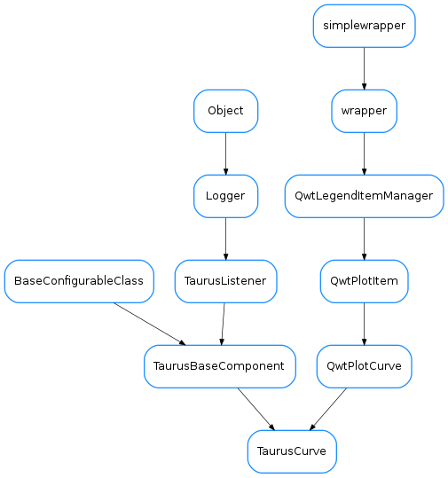

TaurusCurve¶

-
class
TaurusCurve(name, xname=None, parent=None, rawData=None, optimized=False)[source]¶ Bases:
PyQt4.Qwt5.Qwt.QwtPlotCurve,taurus.qt.qtgui.base.taurusbase.TaurusBaseComponentTaurus-enabled custom version of QwtPlotCurve.
TaurusCurves are attached to
TaurusPlotobjects for displaying 1D data sets.A TaurusCurve is more complex than simple QwtPlotCurve in that:
- It is taurus-aware (i.e., it is associated to a taurus model (an attribute) and listens to Taurus events to update its data
- They may have an associated
TaurusXValuesobject that controls the values for its abscissas. - It uses a
CurveAppearancePropertiesobject to manage how it looks
Important:
The TaurusPlot is in charge of attaching and detaching its TaurusCurves, and keeps information about which TaurusCurves are attached. Therefore the programmer should never attach/detach a TaurusCurve manually.
-
attachMarkers(plot)[source]¶ attach markers to the plot
Parameters: plot – the plot (typically, the TaurusPlot instance)
-
attachMaxMarker(plot)[source]¶ attach marker of max value to the plot
Parameters: plot – the plot (typically, the TaurusPlot instance)
-
attachMinMarker(plot)[source]¶ attach markers of min value to the plot
Parameters: plot – the plot (typically, the TaurusPlot instance)
-
compileTitleText(titletext)[source]¶ Substitutes the known placeholders by the current equivalent values for a titleText.
Note: Some placeholders may not make sense for certain curves (e.g. <label> for a RawData curve). In these cases, they are left unprocessed (without warning).
Parameters: titletext ( str) –A string which can contain any of the following predefined placeholders:
- <label> the attribute label (default)
- <model> the model name
- <attr_name> attribute name
- <attr_fullname> full attribute name (for backwards compatibility, <attr_full_name> is also accepted)
- <dev_alias> device alias
- <dev_name> device name
- <dev_fullname> full device name (for backwards compatibility, <dev_full_name> is also accepted)
- <current_title> The current title
Return type: strReturns: a title string where the placeholders have been substituted by their corresponding values
-
consecutiveDroppedEventsWarning= 3¶
-
dataChanged¶ Base signal dataChanged
-
detach()[source]¶ reimplemented from
QwtPlotCurve. In addition to dettaching the curve, it dettaches the associated min/max markers.
-
droppedEventsWarning= -1¶
-
getAppearanceProperties()[source]¶ Returns the appearance properties of the curve (color, symbol, width,...).
Return type: CurveAppearancePropertiesReturns:
-
getCurveName()[source]¶ Returns the name of the curve (in the case of non RawDataCurves, it is the same as the model name)
Return type: strReturns:
-
getParentTaurusComponent()[source]¶ Searches the closest ancestor (in the Qt parenting hyerarchy) that is which inherits from TaurusBaseComponent. It returns None if None found.
Return type: widgetorNoneReturns:
-
getRawData()[source]¶ Returns the rawData
Return type: dictorNoneReturns: a RawData dict or None if the curve is not RawData See also
-
getStats(limits=None, inclusive=(True, True), imin=None, imax=None, ignorenans=True)[source]¶ returns a dict containing several descriptive statistics of a region of the curve defined by the limits given by the keyword arguments. It also contains a copy of the data in the considered region. The keys of the returned dictionary correspond to:
-‘x’ : the abscissas for the considered points (numpy.array) -‘y’ : the ordinates for the considered points (numpy.array) -‘points’: number of considered points (int) -‘min’ : (x,y) pair of the minimum of the curve (float,float) -‘max’ : (x,y) pair of the maximum of the curve (float,float) -‘mean’ : arithmetic average of y (float) -‘std’ : (biased)standard deviation of y (float) -‘rms’ : root mean square of y (float)Note that some of the values may be None if that cannot be computed.
Also,
Parameters: - limits (
Noneortuple<float,float>) – tuple containing (min,max) limits. Points of the curve whose abscisa value is outside of these limits are ignored. If None is passed, the limit is not enforced - inclusive (
tuple<bool,bool>) – . A tuple consisting of the (lower flag, upper flag). These flags determine whether values exactly equal to the lower or upper limits are included. The default value is (True, True). - imin (
int) – lowest index to be considered. If None is given, the limit is not enforced - imax (
int) – higest index to be considered. If None is given, the limit is not enforced - ignorenans (
bool) – if True (defaul), the points with NaN values are stripped before calculating the stats
Return type: Returns: A dict containing the stats.
- limits (
-
getXValues()[source]¶ Returns X values using the XValuesBuilder.
Return type: sequenceReturns: See also
-
getYAxisStatus()[source]¶ returns either None (if the curve is not visible) or its yAxis (if it is visible)
Return type: AxisorNoneReturns:
-
handleEvent(src, evt_type, val)[source]¶ Handles Taurus Events for this curve
See:
TaurusBaseComponent.handleEvent()
-
isFilteredWhenLog()[source]¶ returns True if non-possitive values are being discarded when plotting in log mode.
return: (bool)
See also
-
registerDataChanged(listener, meth)[source]¶ registers a listener to the DataChangedSignal of this curve
Parameters: - listener (
QWidget) – listener object - meth (
callable) – callback method
- listener (
-
setAppearanceProperties(prop)[source]¶ Applies the given CurveAppearanceProperties object (prop) to the curve. If a given property is set to None, it is not applied
Parameters: prop ( CurveAppearanceProperties) –
-
setData(x, y)[source]¶ Sets the X and Y data for the curve (possibly filtering non-possitive values if in log mode). Reimplemented from Qwt5.QwtPlotCurve.setData.
Parameters: - x (
sequence) – X values - y (
sequence) – Y values
See also
- x (
-
setFilteredWhenLog(filtered=True)[source]¶ Set whether non-possitive values should be discarded or not when plotting in log mode.
Parameters: filtered ( bool) – if True, filtering is done
-
setPaused(paused=True)[source]¶ Pauses itself and other listeners depending on it
See also
TaurusBaseComponent.setPaused()
-
setTitleText(titletext)[source]¶ Sets the title text for this curve.
Parameters: titletext ( str) – A string which can contain predefined placeholders (which make sense in the case of non-rawdata curves)See Also : compileTitleText
-
setXValuesBuilder(fn=None)[source]¶ Sets the callback to be used for creating the ‘X’ array values for a curve. If None given, the default is that the abscissas are int indexes (from 0 to len(Y)).
Parameters: fn ( callable) – a callable that gets the Y values as a parameter and returns X valuesE.g., the default:
curve.setXValuesBuilder()
is equivalent to:
curve.setXValuesBuilder(lambda yVals: numpy.arange(len(yVals)))
-
setXYFromModel(value)[source]¶ sets the X (self._xValues) and Y (self._yValues) values from the given model. This method can be reimplemented by subclasses of Taurusplot that behave differently (e.g. TaurusTrend)
Parameters: value ( TaurusAttrValue) – the value object from the model
-
setYAxis(axis)[source]¶ changes the Y axis to which the curve is associated
Parameters: axis ( Axis) – the axis to which it should associate
-
showMaxPeak(show)[source]¶ Specififes if we want to show or not the max peak of the curve
Parameters: show ( bool) –
-
showMinPeak(show)[source]¶ Specififes if we want to show or not the min peak of the curve.
Parameters: show ( bool) –
-
titleText(compiled=False)[source]¶ Returns the titleText string. If compiled == True, the returned string will be processed through compileTitleText
Parameters: compiled ( bool) – Whether to process the return value or not (default is compiled=False)Return type: basestringReturns: the title See also